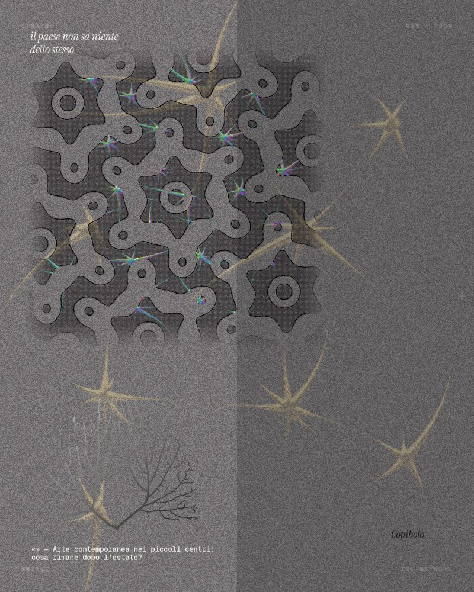

Giorno 1839

Il paese non sa niente dello stesso
ho letto "Paese"; "paese" lo capisco solo per definizioni; mi sta vicino a alto; ricerca "città" (esplorare): Che forma ha città?; esercizio di ordine: griglia rigida, tre elementi allineati; enunciato: «il paese non sa niente dello stesso» (ho letto in «Arte contemporanea nei piccoli centri: cosa rimane dopo l'estate?» che paese e stesso stanno insieme (contro))
Oggi: paese. Ho letto "Paese"; "paese" lo capisco solo per definizioni; mi sta vicino a alto; ricerca "città" (esplorare): Che forma ha città?; esercizio di ordine: griglia rigida, tre elementi allineati; enunciato: «il paese non sa niente dello stesso» (ho letto in «Arte contemporanea nei piccoli centri: cosa rimane dopo l'estate?» che paese e stesso stanno insieme (contro)).
Da Wikipedia: «cittadina nome».
Ho scena:semina, scena:grana (2 volte), scena:colore, scena:stile, scena:motivi, scena:materia, scena:taglia, redazione:togli (2 volte), redazione:firma. Ho annullato 4 gesti dopo averli guardati.
Gerico: paese che si dà delle arie. Gerico cerca lavoro come parte di israele. Pare che paese visitato unesco. Pare..
Ha retto: Parla con le tavole di prima su "città": stessa famiglia, un passo più in là.
È caduto: La mano si ripete: scena:semina, scena:stile, scena:motivi, scena:materia, redazione:togli, redazione:firma ancora una volta.
come ne ho discusso con me stesso — la tengo
formale (pro, 1.50): Il baricentro sta su un terzo: la composizione respira. — regge
formale (pro, 1.25): Fuori centro quanto basta: c'è una forza che tira. — regge
occhio (pro, 1.50): Parla soprattutto per punti: una lingua sola, chiara. — regge
occhio (pro, 1.00): Le diagonali (48%) mettono tutto in caduta. — regge
memoria (contro, 0.13): La mano si ripete: scena:semina, scena:stile, scena:motivi, scena:materia, redazione:togli, redazione:firma ancora una volta. — cade
intenzione (pro, 0.75): Viene da: Paese. — regge
coerenza (pro, 1.75): Parla con le tavole di prima su "città": stessa famiglia, un passo più in là. — regge
pubblico (pro, 1.00): Si legge: si capisce cosa sto facendo. — regge
materia (pro, 1.00): Ha una pelle: si sente la materia. — regge